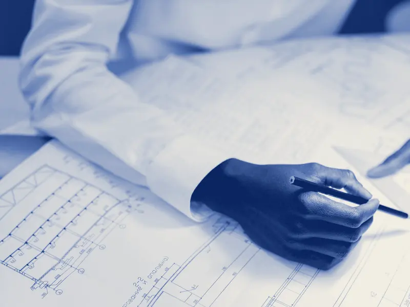
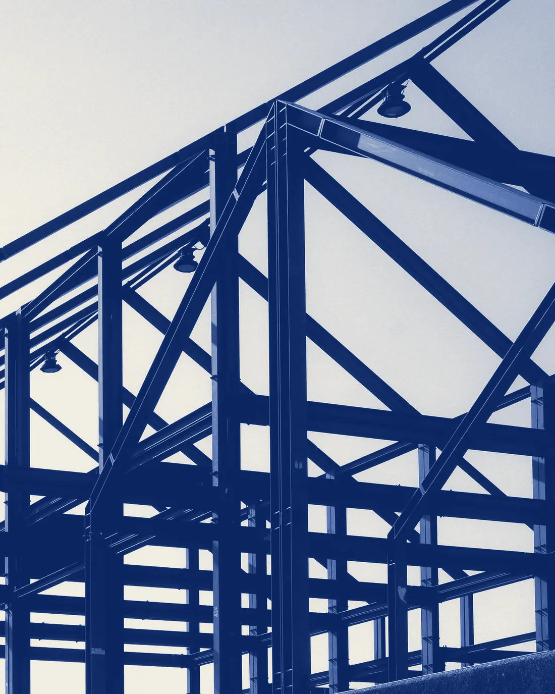
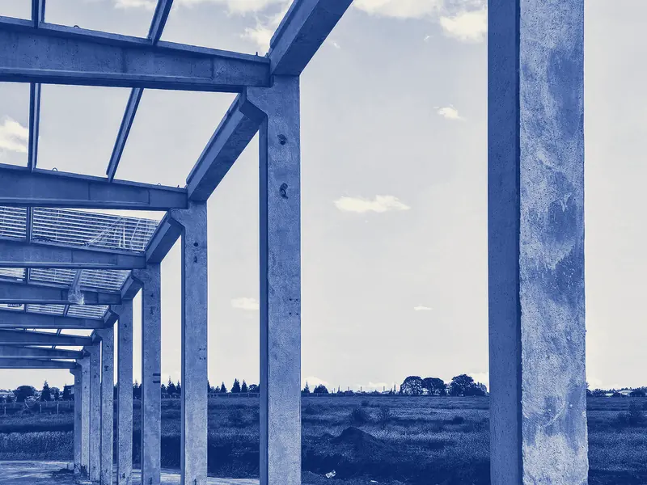
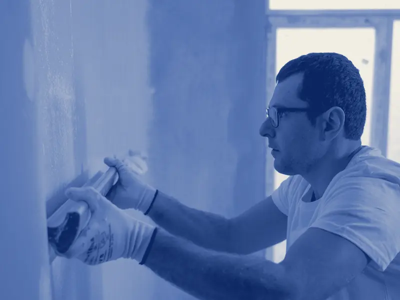
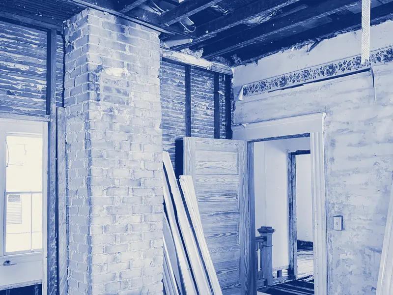
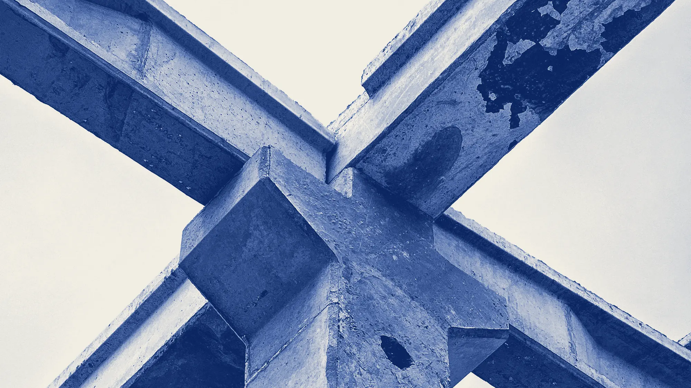

Konstrukciju projektēšana
Ēku nesošo konstrukciju aprēķini un būvprojekta konstrukciju daļa: pamati, sienas, kolonnas, sijas, pārsegumi un jumta konstrukcijas.

Konstrukciju projektēšanaBūvniecībaApdare
SIA „BŪVEKOMS” projektē ēku nesošās konstrukcijas un būvē ēkas. Pamati, sienas, pārsegumi un jumts: vispirms aprēķins un rasējumi, tad darbs objektā.

Pakalpojumi
Būvkomersantu reģistrā esam reģistrēti ēku konstrukciju projektēšanā. Būvējam arī ēkas un veicam apdares darbus.
Ēku nesošo konstrukciju aprēķini un būvprojekta konstrukciju daļa: pamati, sienas, kolonnas, sijas, pārsegumi un jumta konstrukcijas.

Būvējam ēkas pēc projekta no pamatiem līdz jumtam. Ja konstrukcijas projektējām paši, objektā strādājam pēc saviem rasējumiem.

Iekšējās apdares darbi pēc būvdarbiem: sienu un griestu apdare, lai telpas būtu gatavas lietošanai.

Ja jāizņem siena, jāizbūvē jauna aila vai jāmaina pārsegums, vispirms aprēķinām, kā mainīsies slodzes uz nesošajām konstrukcijām, un tikai tad sākam darbus.


Konstrukcija ir tik droša, cik precīzs ir tās aprēķins. Tāpēc katrs darbs sākas pie rasējuma, nevis būvlaukumā.
Kā strādājam
No pirmās ziņas līdz rasējumiem vai gatavam darbam objektā.
Uzrakstiet vai piezvaniet: kas jāprojektē vai jābūvē, kur atrodas objekts un kādā stadijā ir darbi. Ja ir rasējumi vai fotogrāfijas, pievienojiet tās.
Izskatām esošo projektu vai situāciju un, ja vajag, apskatām objektu uz vietas.
Sagatavojam piedāvājumu: darbu apjomu, termiņus un cenu. Vienošanos nostiprinām līgumā.
Izstrādājam konstrukciju rasējumus vai veicam darbus objektā un nododam visu kopā ar dokumentiem.
Kontakti
Kas jāprojektē vai jābūvē, kur un kad. Atbildēsim ar priekšlikumu.